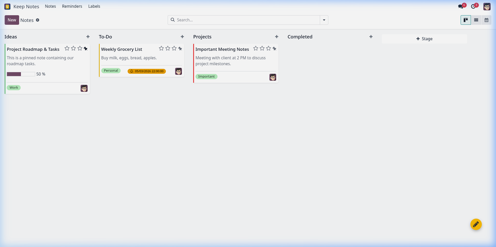
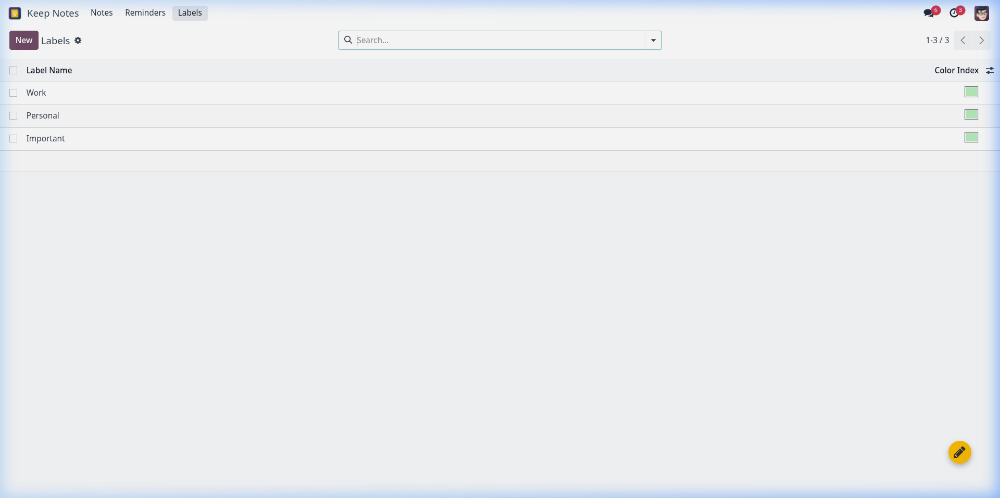
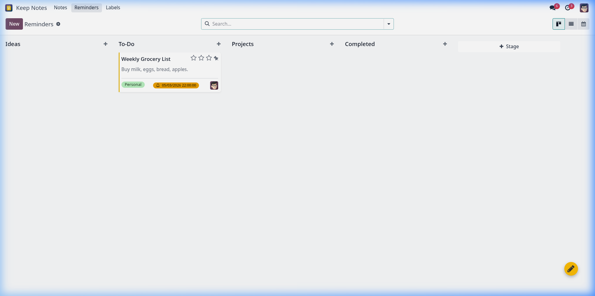

Why Choose Odoo Keep Notes?
Color Kanban Cards
Beautifully layout your thoughts. Pick from 12+ vibrant Google Keep standard color codes to visually categorise tasks at a single glance.
Pin & Prioritise
Keep critical instructions or hot checklists right on top. Seamlessly pin or unpin notes with one-click toggles directly from Kanban cards or forms.
Labels & Multi-Tags
Tag notes under custom labels like 'Work', 'Ideas', 'Personal'. Filter and group search quickly inside the Odoo native search system.
Reminders Integration
Never miss a deadline. Set precise alarm and reminder dates, color-coded directly in both form sheets and calendar timelines.
Application Flow & Lifecycle
Step 1: Discover & Launch
Locate the modern custom Keep Notes application icon directly inside your Odoo App Switcher (as highlighted in Image 2). The app integrates flawlessly into the native theme system.
Step 2: Global Floating Access (FAB)
A yellow Floating Action Button (FAB) containing a pencil icon dynamically anchors in the bottom-right corner of your Odoo screens (as highlighted in Image 2). Start notes immediately, anywhere, anytime.
Step 3: Quick Capture Modal
Click the FAB to launch an overlay modal titled "Take a Note" (as highlighted in Image 3). Write text, structure beautiful dynamic tables, assign tags/labels, and change card colors instantly.
Step 4: Manage & Prioritize
All your notes flow directly into the central Keep Notes Kanban Dashboard. Colored cards keep ideas structured, while pinned critical notes automatically stay organized right on top.
Immersive Interface Showcase
App Switcher Integration
Our customized premium flat icon matches the modern Odoo 18 theme, blending natively into your backend home switcher dashboard.
Full Editor & Form Configuration
Double click any card to edit details. Adjust multi-labels, pick card themes, schedule alarms, or paste media directly in the collaborative HTML area.

Vibrant Kanban Workspace
All your notes are displayed as cards with custom colors, tags, and pinned statuses, mirroring a clean digital whiteboard experience.

Organized Labels & Tags Management
Easily manage your custom color-coded categories (Work, Personal, Ideas) in a clean table view (as highlighted in Image 5). Maintain absolute clarity in sorting notes.

Dedicated Alarms & Reminders Workspace
Focus only on upcoming deadlines and schedule-sensitive notes in the specialized Reminders dashboard (as highlighted in Image 4). Filter out clutter effortlessly.

Timeline Calendar Scheduling
Visualize your action notes across Odoo's fully integrated interactive Calendar view (as highlighted in Image 6). Toggle between Month, Week, and Day layouts.